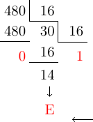

De façon naturelle, on travaille avec des nombres écrits le plus souvent en base 10, avec ses 10 chiffres de 0 à 9 (à cause de nos 10 doigts ?).
Ainsi, chaque nombre est décomposé suivant des unités (rang 0), dizaines (rang 1), centaines (rang 2), etc.
On peut aussi utiliser les puissances de 10. Exemple
Le nombre 125 est égal une centaine plus deux dizaines plus cinq unités, ce qui
peut être écrit aussi: \(125=1\times 10^2+2\times 10^1+5\times 10^0\)
Dans un ordinateur, la base naturelle est la base 2 ou binaire (l'état d'un composé électronique ne prend que deux valeurs: allumé ou éteint). Deux chiffres seulement sont nécessaires: le zéro et le un. Comme en base 10, un nombre peut être décomposé en unité (rang 0), deuzaine (rang 1), quatraine (rang 2), huitaine (rang 3) etc.
La base 16 est également très utilisée en informatique. Dans cette base, seize symboles (chiffres) sont nécessaires. On utilise les dix chiffres de la base 10 plus les six lettres A, B, C, D, E et F.
Base 16
0
1
2
3
4
5
6
7
8
9
A
B
C
D
E
F
Base 10
0
1
2
3
4
5
6
7
8
9
10
11
12
13
14
15
Les principes de conversions vus précédemment sont toujours valables.
Conversion de la base 10 vers la base 16
On effectue des divisions successives du quotient tant que celui-ci n'est pas nul. Exemple
Soit le nombre \(480_{10}\) à écrire en base 16.

La flêche indique le sens de lecture: \(480_{10}=1\mathrm{E}0_{16}\)
Conversion de la base 16 vers la base 10
On effectue la somme de la décomposition du nombre en puissance de 16. Exemple
Fanny a choisi comme couleur de fond de la page d'accueil de son site web la valeur #F34DC1. Dans cette syntaxe, chaque paire de caractère correspond à nombre hexadécimal associé à une nuance de rouge, de vert ou de bleu (codage RGB). Ici, la nuance de rouge est codé par le nombre F3. La nuance de vert est associé à 4D et celle du bleu à C1.
Donner chaque nuance de couleur en base 10;
Les autres pages du site auront une couleur de fond codée en décimal par le triplet RGB (241, 19, 126). Donner le code hexadécimal de cette couleur.
Pour passer de l'hexadécimal au binaire il suffit de remplacer chaque chiffre hexadécimal par son code binaire.
Hexadécimal
0
1
2
3
4
5
6
7
8
9
A
B
C
D
E
F
Binaire
0000
0001
0010
0011
0100
0101
0110
0111
1000
1001
1010
1011
1100
1101
1110
1111
A faire
Quelle est la valeur en binaire, du code de la couleur de la page d'accueil du site de Fanny ?
1
Pour passer d'une écriture binaire à l'hexadécimale, on fait des groupes de 4 chiffres binaires de la droite vers la gauche (si besoin on complète avec des zéros). On fait correspondre à chaque groupe le chiffre hexadécimal correct (voir tableau ci-dessus. Exemple
Que vaut \(111\ 0001\ 1010_2\) en hexadécimal ? Réponse: \(71\mathrm{A}\)
A faire
Ecrire \(10\ 1111\ 1101\ 1010\ 0111\ 1011_2\) en hexadécimal
1
Search
From here you can search these documents. Enter your search terms below.